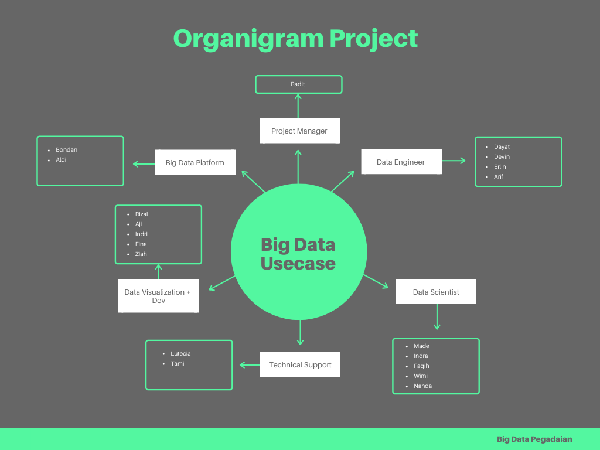
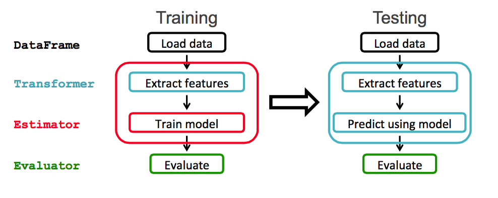

Merupakan tahapan awal dari CRISP-DM (Cross-Industry Standard Process Model for Data Mining).
Produk Pegadaian
Non Angsuran:
Gadai, Rahn, dll
Angsuran:
Kreasi, Krasida, Arrum Haji, dll
Investasi:
Tabungan Emas, Tabungan Emas Channel
Usecase
Variabel dependent Y
Variabel independent X
Variabel dependent Y
Variabel independent X
Datamart Ingestion
Added Variables
#Convert Date to Duration
import datetime
from pyspark.sql.functions import to_timestamp, to_utc_timestamp, unix_timestamp, datediff
from pyspark.sql.functions import lit, col, round
}# Get current timestamp
current = to_utc_timestamp( unix_timestamp(lit(datetime.datetime.now()), 'yyyy-MM-dd').cast('timestamp'), 'UTC' )
# Added Variabel Age (Year)
df_load = df_load.withColumn('age', round(datediff(lit(current), to_timestamp("tgl_lahir", "dd-MM-yyyy"))/365))
# Added Variables (Recency)
from pyspark.sql.functions import least, col
df_load = df_load.withColumn('non_angsuran_recency', least(col('non_angsuran_cair_recency'), col('non_angsuran_ulang_gadai_recency'), col('non_angsuran_cicil_recency'), col('non_angsuran_tebus_recency') ))
df_load = df_load.withColumn('angsuran_recency', least(col('angsuran_angsuran_recency'),col('angsuran_pelunasan_recency'), col('angsuran_cair_recency'), col('angsuran_topup_recency') ))
df_load = df_load.withColumn('investasi_recency', least(col('investasi_buy_recency'),col('investasi_sale_recency'), col('investasi_transfer_recency'), col('investasi_order_recency'), col('investasi_reprint_transaksi'), col('investasi_pymntain_transaksi'), col('investasi_open_transaksi') ))
# Added Variables (Frequency)
from pyspark.sql.functions import coalesce
df_load = df_load.withColumn('non_angsuran_frequency', coalesce(df_load.non_angsuran_cair_frequency_sum, lit(0)) + coalesce(df_load.non_angsuran_ulang_gadai_frequency_sum, lit(0)) + coalesce(df_load.non_angsuran_cicil_frequency_sum, lit(0)) + coalesce(df_load.non_angsuran_minta_tambah_frequency_sum, lit(0)) + coalesce(df_load.non_angsuran_tebus_frequency_sum, lit(0)))
df_load = df_load.withColumn('angsuran_frequency', coalesce(df_load.angsuran_angsuran_frequency_sum, lit(0)) + coalesce(df_load.angsuran_pelunasan_frequency_sum, lit(0)) + coalesce(df_load.angsuran_cair_frequency_sum, lit(0)) + coalesce(df_load.non_angsuran_minta_tambah_frequency_sum, lit(0)) + coalesce(df_load.angsuran_topup_frequency_sum, lit(0)))
df_load = df_load.withColumn('investasi_frequency', coalesce(df_load.investasi_buy_frequency_sum, lit(0)) + coalesce(df_load.investasi_sale_frequency_sum, lit(0)) + coalesce(df_load.investasi_transfer_frequency_sum, lit(0)) + coalesce(df_load.investasi_order_frequency_sum, lit(0)) + coalesce(df_load.investasi_reprint_frequency_sum, lit(0)) + coalesce(df_load.investasi_pymntain_frequency_sum, lit(0))+ coalesce(df_load.investasi_open_frequency_sum, lit(0)))# Added Variables (Jumlah Keseluruhan Product)
df_load = df_load.withColumn('jumlah_produk_aktif', coalesce(df_load.jumlah_produk_aktif_non_angsuran, lit(0)) + coalesce(df_load.jumlah_produk_aktif_angsuran, lit(0)) + coalesce(df_load.jumlah_produk_aktif_investasi, lit(0)))Count Missing Value
total_row = df_load.count()
df_cmissing = df_load.select(*((sum(col(c).isNull().cast("int"))*100./total_row).alias(c) for c in df_load.columns))Remove Unused Rows & Columns
thresh_column = 80
columns_to_drop = [c for c, v in df_cmissing.select([
count(when(col(c) > thresh_column, 1)).alias(c) for c in df_cmissing.columns
]).first().asDict().items() if v] ##syarat untuk di drop # Remove Columns
if len(columns_to_drop)>0:
df_load = df_load.drop(*columns_to_drop)# Remove Rows
import math
thresh_row = 0.3
total_column = len(df_load.columns)
df_load = df_load.dropna(thresh=math.floor(thresh_row*total_column))thresh=math.floor(thresh_row*total_column)Ambil Random Sample Data untuk Pengujian
# Ambil sample y=0 dari dataset
df_count_test_0 = df_load.filter(df_load.y == 0)
count_test_0 = df_count_test_0.filter(df_count_test_0.y == 0).count()
total_test_0 = int((count_test_0*persen_sample/100.))
df_test_0 = spark.sql(""" select * from table_load where y=0
distribute by rand()
sort by rand()
limit {total_0}
"""
.format(total_0=total_test_0)
)# Ambil sample y=1 dari dataset
df_count_test_1 = df_load.filter(df_load.y == 1)
count_test_1 = df_count_test_1.filter(df_count_test_1.y == 1).count()
# print(type(count_test_1*(persen_sample/100)))
total_test_1 = int(count_test_1*persen_sample/100.)
df_test_1 = spark.sql(""" select * from table_load where y=1
distribute by rand()
sort by rand()
limit {total_1}
"""
.format(total_1=total_test_1)
)Data Cleansing
Data Exploration
Melakukan concatenation dan mencari korelasi antar variabel berdasarkan jenisnya. Untuk dataset numerik, menggunakan metode ANOVA, sedangkan untuk data kategorik menggunakan Chi-square.
Korelasi yang diperoleh digunakan untuk reduce variable.
Untuk kasus X numerik, dicari apakah terdapat multicolinearity melalu nilai VIF (Variance Inflation Factor).
Jika terdapat multicolinearity, maka drop variabel/kolom tersebut.

Processing Variable
## Deal with Categorical Label and Variables
def get_dummy(df,categoricalCols,continuousCols,labelCol):
from pyspark.ml import Pipeline
from pyspark.ml.feature import StringIndexer, OneHotEncoder, VectorAssembler
from pyspark.sql.functions import col
indexers = [ StringIndexer(inputCol=c, outputCol="{0}_indexed".format(c))
for c in categoricalCols ]
# default setting: dropLast=True
encoders = [ OneHotEncoder(inputCol=indexer.getOutputCol(),
outputCol="{0}_encoded".format(indexer.getOutputCol()))
for indexer in indexers ]
assembler = VectorAssembler(inputCols=[encoder.getOutputCol() for encoder in encoders]
+ continuousCols, outputCol="features")
pipeline = Pipeline(stages=indexers + encoders + [assembler])
model=pipeline.fit(df)
data = model.transform(df)
data = data.withColumn('label',col(labelCol))
return data.select('features','label')
Split Dataset
## Split Data
train, test = df_features.randomSplit([0.7, 0.3], seed = 2020)
print("Training Dataset Count: " + str(train.count()))
print("Test Dataset Count: " + str(test.count()))
Build Model
## Logistic Regression Model
from pyspark.ml.classification import LogisticRegression
lr = LogisticRegression(featuresCol = 'scaled_features', labelCol = 'label', maxIter=10)
# Tuning Logistic Regression model with the ParamGridBuilder and the CrossValidator
from pyspark.ml.tuning import ParamGridBuilder, CrossValidator
# Create ParamGrid for Cross Validation
paramGrid = (ParamGridBuilder()
.addGrid(lr.regParam, [0.01, 0.1, 1, 10])
.addGrid(lr.elasticNetParam, [0.0, 0.5, 1.0])
# .addGrid(lr.maxIter, [1, 5, 10])
.build())Evaluate Model Performance
# Model Performance
import numpy as np
arr = np.arange(0.1, 1.0, 0.1)
def model_performance(arr,bcm):
cut = []
accu = []
sens = []
spec = []
prec = []
f1 = []
tp = []
fp = []
fn = []
tn = []
perf = []
for i in arr:
tp = bcm.confusionMatrix(i).toArray()[0][0]
fp = bcm.confusionMatrix(i).toArray()[0][1]
tn = bcm.confusionMatrix(i).toArray()[1][1]
fn = bcm.confusionMatrix(i).toArray()[1][0]
cutoff = i
accuracy = (tp+tn)*1./(tp+fp+tn+fn)
sensitivity = (tp)*1./(tp+fn)
specificity = (tn)*1./(tn+fp)
precision = (tp)*1./(tp+fp)
f1_score = 2./((1./sensitivity)+(1./precision))
cut.append(cutoff)
accu.append(accuracy)
sens.append(sensitivity)
spec.append(specificity)
prec.append(precision)
f1.append(f1_score)
perf_ = [cutoff, accuracy, sensitivity, specificity, precision, f1_score, tp, fp, fn, tn]
perf.append(perf_)
return perf